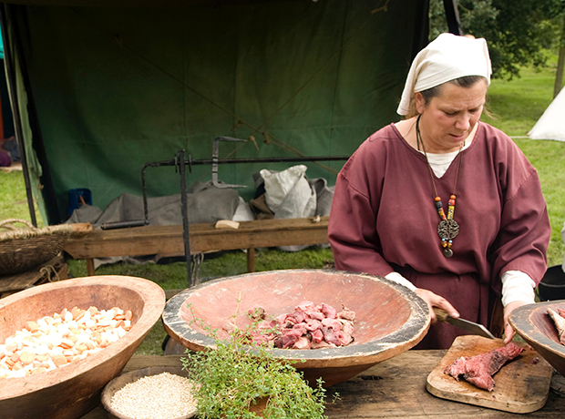
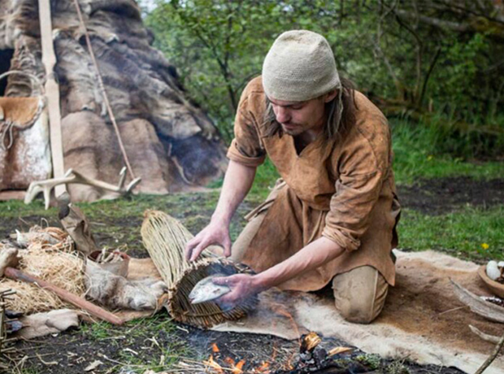
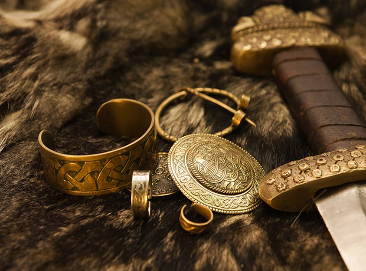

1. The Viking Seafaring Package
| Location |
Main camp and sea off the Isle of Flegg |
| Activity |
Sailing, rowing |
| Duration |
1 day |
| Cost |
£150 |
 The Vikings were expert ship builders, with ships capable of crossing the North Sea, the North Atlantic,
and even the Mediterranean. Whilst they had a range of different types of ship, the most famous is the longship.
The longship had a unique structure, with a long, narrow hull and a relatively flat bottom, making the ships seaworthy
on the high seas and shallow waters alike. The longships were often decorated with carvings, including the
well-known dragon-head on the prow of the ship.
The Vikings were expert ship builders, with ships capable of crossing the North Sea, the North Atlantic,
and even the Mediterranean. Whilst they had a range of different types of ship, the most famous is the longship.
The longship had a unique structure, with a long, narrow hull and a relatively flat bottom, making the ships seaworthy
on the high seas and shallow waters alike. The longships were often decorated with carvings, including the
well-known dragon-head on the prow of the ship.
At the Viking Experience UK we have an authentic Viking ship building yard, and two replica longships (built
using Viking ship building techniques as far as possible), the Tanngrisnir and the Tanngnjostr -named after the goats that pulled Thor's chariot
across the sky.
We offer you the opportunity to experience what it was like to be at sea in one of these ships as part of the
Seafaring Experience. The experience involves an introduction to the Vikings and their life at sea, a
safety briefing, and then we head out to the ships. We will row out from the shore, and set sail once we are
clear of the shoreline. From the camp we will sail north along the Norfolk coast, and land for lunch at a suitable location,
making the most of the longship's design that enables us to get right up to shore.
For those who are so inclined, a full Viking raid landing can be arranged, leaping over the sides to storm onto shore
with weapons and shields at the ready. After lunch we set sail again (or row depending on the winds), and return to
camp.
For the Seafaring Experience you will be provided with full Viking attire including weapons and shields, and not so Vikingey life-vests (which are non-optional!).
We recommend that you wear waterproof clothing under the viking outfits, as these are open longships, and
spray, waves, and rain are all possible during the outing. The trips go ahead except in extreme weather (wind and waves),
and in the event that the trip cannot go ahead you will be given the option of a refund or to re-book another date.
Upcoming Seafaring Experiences:
| Tue 6 June 2023 |
12 spaces |
| Sat 10 June 2023 |
12 spaces |
| Tue 4 July 2023 |
12 spaces |
| Sat 8 July 2023 |
12 spaces |
| Tue 8 Aug 2023 |
12 spaces |
| Sat 12 Aug 2023 |
12 spaces |
2. The Viking Camp Package
| Location |
Main camp and off-site camp area |
| Activity |
Sailing, walking, camping |
| Duration |
2 days |
| Cost |
£250 |

Once ashore, the Viking incursion took on a very different nature from that on sea. The Vikings
travelled with everything they needed for setting up camp after a successful landing, including tents,
tools for repairing weapons and equipment, food and provisions. They would also carry medical supplies
for tending to anyone wounded in any initial encounters with the locals.
The Viking Camp package lets you experience what it was like to land ashore, establish a foothold, and
then proceed inland to set up camp using Viking Age tents and materials.
For the Camp experience, we will start at the main camp (our reception centre), and after a general talk about Viking life we will have a safety briefing.
After the briefing we will proceed to one of the longships waiting at the shore, and row a short distance north along the Norfolk coast before landing at a suitable location.
The first task will be to establish a foothold (there may be guards patrolling the shore!), after which we will unload what we need
for our incursion. We will divide the equipment, and set off in search of somewhere to set up camp (approximately a two-mile walk from the landing site).
Once at the site we will set up camp, including pitching tents, getting a fire going, and sharing tasks
such as cooking, tending to the wounded, repairing equipment, and eventually settling down for some
Viking style leisure activities, such as games and weapons and battle practice. In the evening we will have a good meal
cooked over the fire, before retiring to the tents for the night. The next day we will pack up camp, and
set out on the next leg of the journey (approximately five miles) which will take us back to base.
For the Camp Experience you will be provided with Viking attire and weapons, as well as everything needed to set up camp.
We recommend that you wear appropriate clothing under your Viking clothes, taking into account the possibility of rain and spray from
the journey to the landing area, and in line with general temperature and weather forecasts. If in doubt, do contact us and
we will be happy to advise on suitable clothing. The food will be meat and vegetables (cooked over the open fire), and Viking style hot drinks
(tea and coffee will also be available), but you are of course welcome to bring other foods to cater for likes and dietary requirements.
Sleeping arrangements will be two-five people per tent, and you will share with others in your party. We will
contact you before arranging for anyone outside your party to share tent should that be necessary. The trip will go ahead unless there is extreme weather (wind, rain,
other weather-related events), in which case you can request a refund or re-book onto another date.
Upcoming Camp Experiences:
| Tue 6 June 2023 |
12 spaces |
| Sat 10 June 2023 |
12 spaces |
| Tue 4 July 2023 |
12 spaces |
| Sat 8 July 2023 |
12 spaces |
| Tue 8 Aug 2023 |
12 spaces |
| Sat 12 Aug 2023 |
12 spaces |
Go to Contact/Booking
Return to Overview
3. The Viking Arts and Crafts Package
| Location |
Main camp |
| Activity |
Carving, sewing, metalwork |
| Duration |
1 day |
| Cost |
£200 |


Viking Arts and Crafts mostly involved decorating functional objects, such as weapons, buildings,
vessels (both for land and sea), and clothing, but they also made elaborate jewellery and decorative objects.
The designs were often taken from Norse mythology, such as Norse Gods, creatures (especially
snakes, wolves, and dragons), and often used the well-known interwoven patterns also seen in Celtic design. They used all types of material for their arts and crafts, including
wood, bone, metal, fabric, and stone. Viking designs are widely used right across the globe.
In the Viking Arts and Craft Experience, we have access to the tools and materials that would have been used by
the Vikings, set up in our main camp area. As part of the experience you will come to learn about the origin
of some of the most famous designs, as well as some lesser known patterns. Moreover, you will be given the opportunity to
craft items using the original Viking techniques and Viking tools, with access to materials such as metal (we have a forge),
woods (the choice of type of wood depends on your project), and textiles (including leather). Making use of
expert tutors from our partner organisations, you will be invited to choose a design (we have a catalogue of designs available), material, and object to decorate.
Or you are very welcome to bring your own design and/ or object you would like to embellish!
The day will start with a talk on Viking design, its origins and uses, and we will have some original examples for
you to interact with. After the talk there will be a safety briefing on using the tools available (whether that is axe and knife or
the forge for metal-smithing), and then it is over to you to decide on your design and materials. Our tutors will help you get started,
and then it is up to you to carry on with the work. And one essential skill our tutors have is to not just cover up mistakes made,
but to incorporate them into the design -making it look intentional! We will have lunch cooked over the open fire,
and there will be hot Viking style drinks available all day (as well as tea and coffee if those are more to your taste).
Materials and tools are provided (and yes, you get to take your project home at the end of the day), and you will be
provided with full Viking attire should you wish to enter fully into the Viking spirit.
Finally,
please do note that it takes years to become fully fledged at Viking arts and crafts, so be realistic about
what you expect from your project -this day is about trying your hand at the tools, techniques and designs rather than
reproducing the dragon's head from the Oseberg ship!
Upcoming Arts and Craft Experiences:
| Tue 6 June 2023 |
12 spaces |
| Sat 10 June 2023 |
12 spaces |
| Tue 4 July 2023 |
12 spaces |
| Sat 8 July 2023 |
12 spaces |
| Tue 8 Aug 2023 |
12 spaces |
| Sat 12 Aug 2023 |
12 spaces |
Go to Contact/Booking
Return to Overview